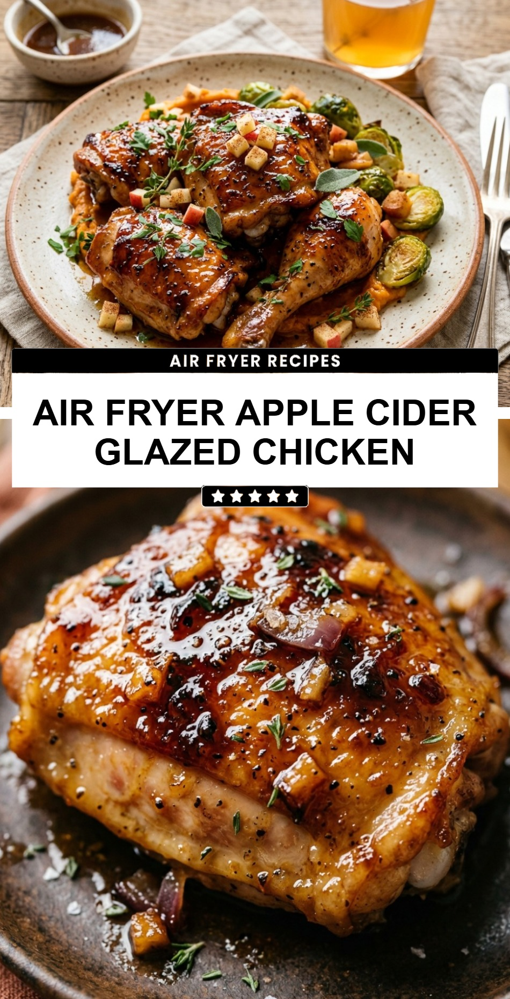

Air Fryer Apple Cider Glazed Chicken
October 19, 2026

As the leaves begin to turn and the air gets crisp, there is nothing quite like the comforting flavors of autumn to warm your kitchen. This Air Fryer Apple Cider Glazed Chicken captures the essence of the season in a fraction of the time it takes to roast a whole bird. By using the air fryer, you get perfectly tender chicken with a sticky, caramelized exterior that tastes like it spent hours simmering on the stove.
Recipe Information
Prep Time: 15 minutes
Cook Time: 20 minutes
Total Time: 35 minutes
Servings: 4
Difficulty Level: Easy
Nutrition Information
Calories per serving: 310
Protein: 26g
Carbohydrates: 19g
Fat: 12g
Fiber: 0g
Sugar: 16g
Sodium: 480mg